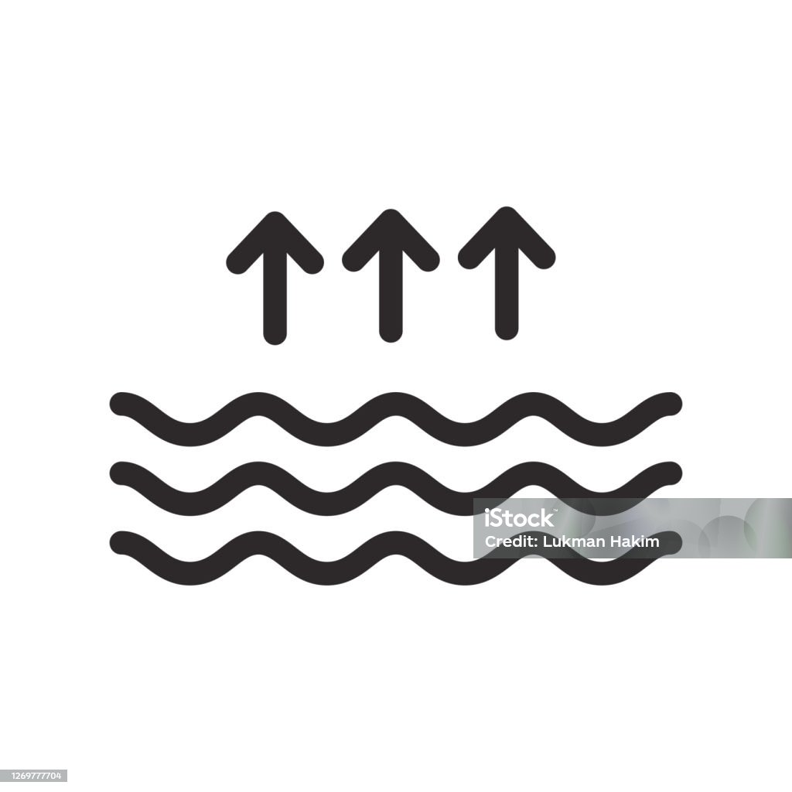
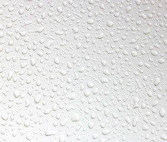
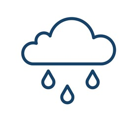
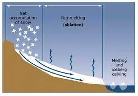

Evaporation

Water from oceans, lakes, and rivers evaporates due to the sun's heat, forming water vapor.
Condensation

The water vapor cools down and condenses into clouds in the atmosphere.
Precipitation

Clouds become heavy with water droplets and precipitation occurs in the form of rain, snow, sleet, or hail.
Collection

Surface runoff or infiltration collects water in oceans, lakes, rivers, and underground reservoirs, completing the cycle.